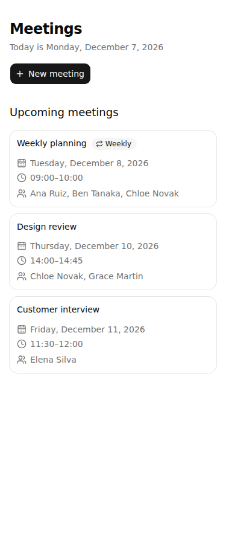
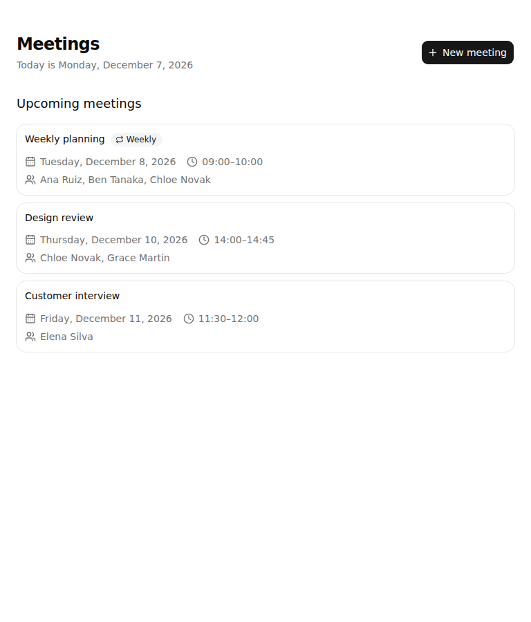
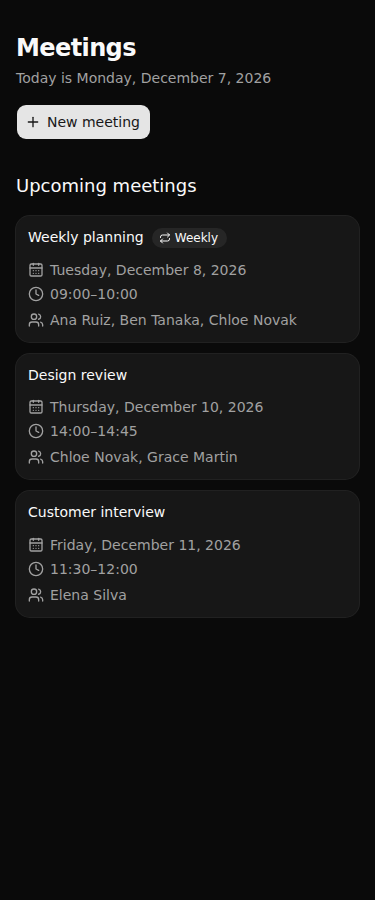
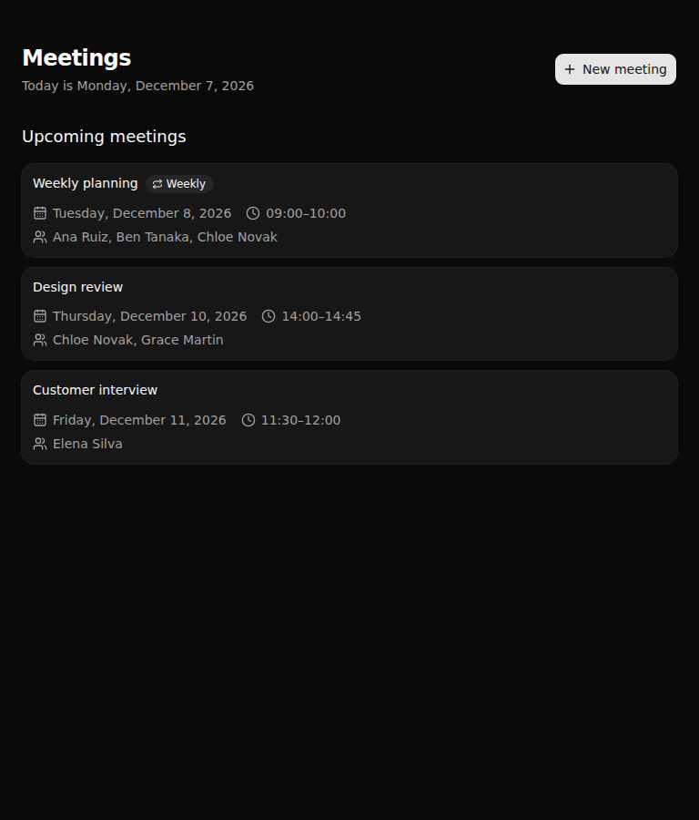
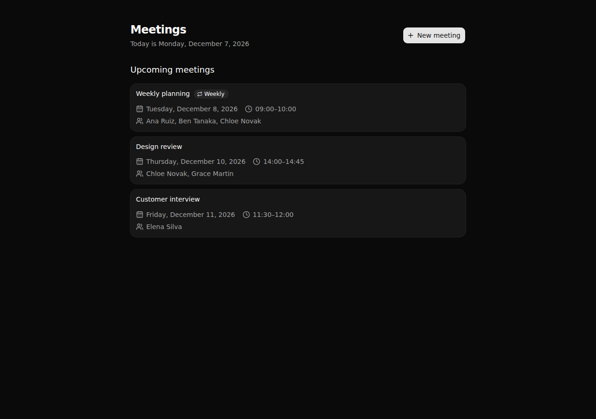

Quality
- Build
- yes
- Typecheck
- yes
- Keyboard-only flow
- yes
- Axe rules violated
- 0
- Console errors at load
- 0
Time and process
- Wall clock
- 19.4 min
- Model time
- 11.0 min
- Tool time
- 8.4 min
- Turns
- 63
- Tool calls
- 61
- Builds (failed)
- 9 (1)
- Vendor skill used
- yes
Tokens and cost
- Cost
- $3.665
- Input (uncached)
- 118
- Cache read
- 5,960,382
- Cache write
- 142,388
- Output
- 66,644
claude-code total_cost_usd
Output
- Code lines added
- 3,075
- Bundle (gzip)
- 166.0 KB
- Dependencies added
- none
claude-opus-5-5, CLI 2.1.325; shadcn 4.23.0, @base-ui/react 1.9.0, lucide-react 1.73.0.
Prompt
The complete prompt the agent received, verbatim (1,577 words). Both models got exactly the same text for this task; the shadcn/ui and UI SDK versions differ only in the Stack paragraph. Raw markdown
Show the full prompt
You are working in a frontend project in the current directory. Complete the task below on your own in this one session: nobody will answer questions or give feedback, so make reasonable decisions and finish. When you are done, the project must build with npm run build.
Stack
Vite + React 19 + TypeScript + Tailwind CSS v4, with shadcn/ui already initialised (components.json). Add shadcn/ui components with its CLI as you need them. See AGENTS.md / CLAUDE.md for project notes.
Rules
- UI only. There is no real backend, server or authentication. Use the mock API in
src/mock/api.tsfor all data; don't edit anything insrc/mock/. If you need something it doesn't cover, add your own in-memory placeholder in a separate file. - Build the whole task as the app's single page (replace
src/App.tsx). No routing is needed. - You may add utility libraries (for example drag-and-drop, virtualization, positioning or table-state helpers). Don't add a ready-made implementation of the widget you are asked to build (for example a data grid or spreadsheet component, a node-graph or flow-canvas library, or a calendar/scheduler suite).
- It must work in light and dark mode (see the dark mode note in AGENTS.md / CLAUDE.md) and at mobile width (375 px) as well as desktop.
- Follow the accessibility requirements in the task, including any accessibility contract: exact roles, accessible names and attributes are part of the task.
- Keep
base: './'invite.config.tsso the build works from a subpath.
Task: Meeting booking dialog
Build a single-page app where a person books a meeting through a dialog. The data comes from the mock API in src/mock/api.ts (searchPeople, getPeople, getUnavailableDates, listMeetings, createMeeting, deleteMeeting, getToday, plus the option constants START_TIMES, DURATIONS, RECURRENCE_OPTIONS). Treat getToday() (2026-12-07, a Monday) as the current date everywhere; don't use the real clock.
Page
- A heading "Meetings".
- A button "New meeting" that opens the booking dialog.
- A section headed "Upcoming meetings" with a list of meetings from
listMeetings(). Each list item shows at least the meeting title, date and start time. Show a loading state while the list loads.
The booking dialog
A modal dialog titled "New meeting". While it is open, the page behind it cannot be reached with the mouse, keyboard or a screen reader's virtual cursor. Opening it moves focus to the "Title" field.
Fields, in this order:
- Title: a required text field.
- Attendees: a multi-select combobox. Typing searches people with
searchPeople(query)(debounce typing; cancel or ignore stale searches so results always match the current text). Results are listed as options showing name and email. Choosing an option adds the person as a chip next to or above the input and clears the typed text. Each chip has a remove button whose accessible name is "Remove <person name>". Backspace in the empty input removes the last chip. At least one attendee is required. While a search is pending, the popup shows "Searching…"; when it returns no people it shows "No people found"; when it fails it shows "Couldn't load people" with a "Retry" button that repeats the search. These three messages must be announced to screen readers (put them in a live region). - Date: a date picker. A control whose accessible name starts with "Date" shows the chosen date (formatted to include, for example, "December 8, 2026" or "December 8th, 2026") or a placeholder, and opens a calendar. The calendar shows one month at a time, starts on the selected month (or the current month), has "Previous month" and "Next month" buttons, and a heading with the month and year (for example "December 2026"). Each day is a button or grid cell whose accessible name includes the full date in the form "December 9, 2026" (an ordinal like "December 9th, 2026" and a weekday prefix like "Wednesday, " are fine). Past dates, Saturdays and Sundays, and every date returned by
getUnavailableDates()are disabled: they are exposed as disabled (aria-disabled="true"ordisabled) and can't be chosen with mouse or keyboard. Required. - Start time: a select with the options in
START_TIMES(labels exactly as listed, for example "09:30"). No default; required. - Duration: a select with the options in
DURATIONS(labels exactly as listed, for example "1 hour"). Defaults to "30 min". - Repeat: a radio group with the options in
RECURRENCE_OPTIONS(labels exactly as listed). Defaults to "Does not repeat".
Below the fields, when both start time and duration are set, show the computed end time as text in the form "Ends at HH:MM" (24-hour clock).
Buttons: "Create meeting" (submits) and "Cancel".
Behavior
- Validation happens on submit. Each invalid field shows an error message next to it, is marked
aria-invalid="true", and has the message in its accessible description (for example througharia-describedby). Messages: "Enter a title", "Add at least one attendee", "Choose a date", "Choose a start time". Focus moves to the first invalid field in the order above. Errors clear as each field becomes valid. - Submitting a valid form calls
createMeeting()with aMeetingInputbuilt from the fields. While it is pending, the submit button is disabled and reads "Creating…". On success the dialog closes, focus returns to "New meeting", the new meeting appears in "Upcoming meetings", and a toast says "Meeting created" with an "Undo" button. The toast is announced to screen readers, stays visible for at least 8 seconds, and does not disappear while the pointer is over it or focus is inside it. - Create failure: if
createMeeting()fails, the dialog stays open with every value intact, and an alert (role="alert") inside the dialog says "Couldn't create meeting". The submit button becomes usable again. - Undo calls
deleteMeeting()for the created meeting, removes it from the list so the list is exactly as it was before, and reopens the dialog with exactly the values that were submitted (title, attendees in the same order, date, start time, duration and repeat option), so the person can adjust and resubmit. - Closing: Escape, "Cancel" or the dialog's close button closes the dialog immediately when nothing has changed since it opened. If anything has changed, closing instead opens an alert dialog titled "Discard changes?" on top of the booking dialog, with buttons "Discard" and "Keep editing". "Keep editing" closes the alert and returns focus to the element that had focus before, with every value intact. "Discard" closes both dialogs. Whenever the booking dialog closes, focus returns to "New meeting". Each time the dialog opens fresh (not via Undo), the form is empty with defaults.
- Escape inside popups: Escape while the attendee popup, the calendar or a select is open closes only that popup and keeps focus on its field; it must not close the dialog or open the discard alert.
- Keyboard: everything works without a mouse. In the attendee combobox, ArrowDown/ArrowUp move through options and Enter chooses. In the calendar, arrow keys move by day and week, PageUp/PageDown change month, Home/End go to the start/end of the week, and Enter or Space chooses the focused date; choosing closes the calendar and returns focus to the date control. Arrow keys move between radio options.
- Responsive and themes: at 375 px wide the dialog fits the viewport with no horizontal scrolling of the page; it may become full width or full screen. Everything must look right and remain readable in light and dark mode.
Acceptance criteria
- "New meeting" opens a modal dialog named "New meeting"; focus moves to "Title"; the page behind is inert.
- Typing in "Attendees" shows "Searching…" while the search is pending, then the matching people as options.
- Choosing options adds attendee chips with "Remove <name>" buttons; removing a chip works; Backspace in the empty input removes the last chip.
- A search with no results shows "No people found".
- A failed search shows "Couldn't load people" and a "Retry" button that searches again and then shows results.
- ArrowDown/ArrowUp and Enter choose attendees from the keyboard; Escape closes the attendee popup without closing the dialog.
- The date picker disables past dates, weekends and unavailable dates; choosing an enabled date shows it in the date control and returns focus there.
- The calendar supports arrow keys, PageUp/PageDown and Enter from the keyboard.
- "Start time" and "Duration" offer exactly the listed options; "Duration" defaults to "30 min"; "Ends at HH:MM" shows the correct end time.
- "Repeat" is a radio group defaulting to "Does not repeat"; arrow keys change the selection.
- Submitting an empty or partly filled form shows the listed error messages, marks fields invalid with the message in their accessible description, and moves focus to the first invalid field.
- A valid submit calls
createMeetingwith the entered values, closes the dialog, returns focus to "New meeting", adds the meeting to the list and shows the "Meeting created" toast with "Undo". - A failed create keeps the dialog open with values intact and shows the "Couldn't create meeting" alert.
- Escape with no changes closes the dialog and returns focus to "New meeting".
- Escape with changes opens "Discard changes?" on top of the dialog; "Keep editing" keeps the values and returns focus; "Discard" closes everything and returns focus to "New meeting".
- "Undo" deletes the meeting, restores the list exactly, and reopens the dialog with exactly the submitted values.
- At 375 px wide the dialog fits without horizontal page scrolling; light and dark mode both render readable content.
Screenshots
Taken by the evaluator at three widths in light and dark mode.





